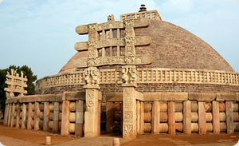

Our Location

Standing Majestically at Maharana Pratap Nagar Hotel Nisarga is a land mark in bustling Commercial Centre of Bhopal.
- 18 Km. from Airport.
- 07 Km. from Bhopal Railway Station
- 02 Km. from Habibganj Railway Station
- 01 Km. from Bus stand
- 03 Km. from Newmarket
Important Tourist Spots Easily accessible from Bhopal:
- Islamnagar 16 Km
- Sanchi Stupa 46 Km
- Pachmari 195 Km
- Raisen Fort 40 Km
- Raisen Fort 40 Km
- Mandu 270 Km
- Indore 200 Km
- Omkareshwar 300 Km
- Ujjain (Mahakaleshwar Temple) 180 Km